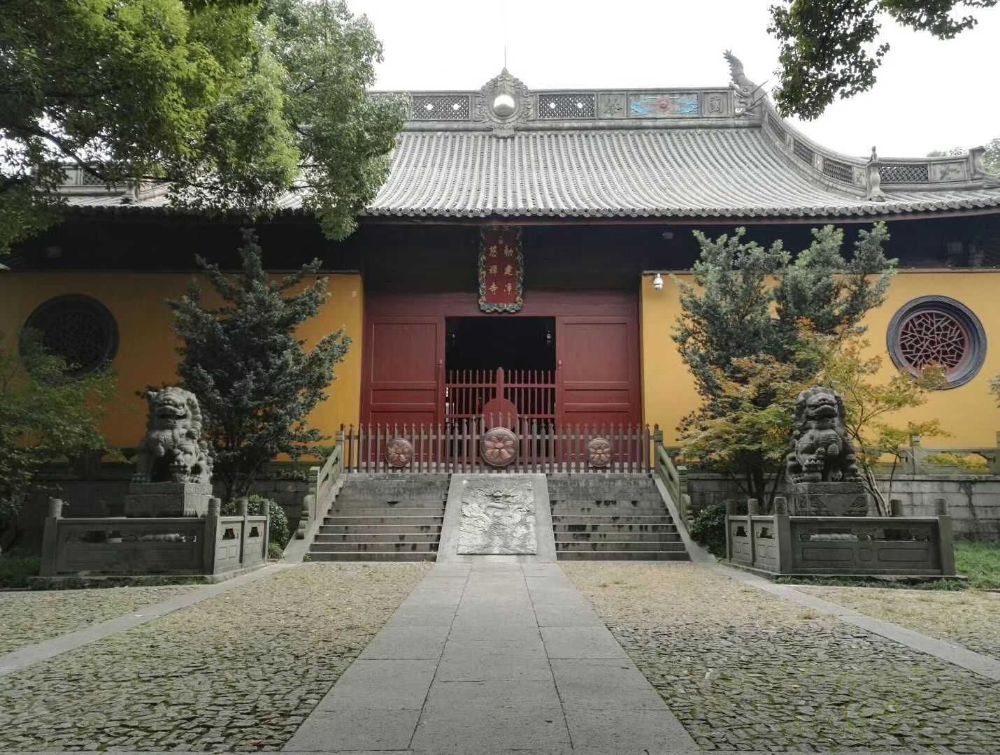
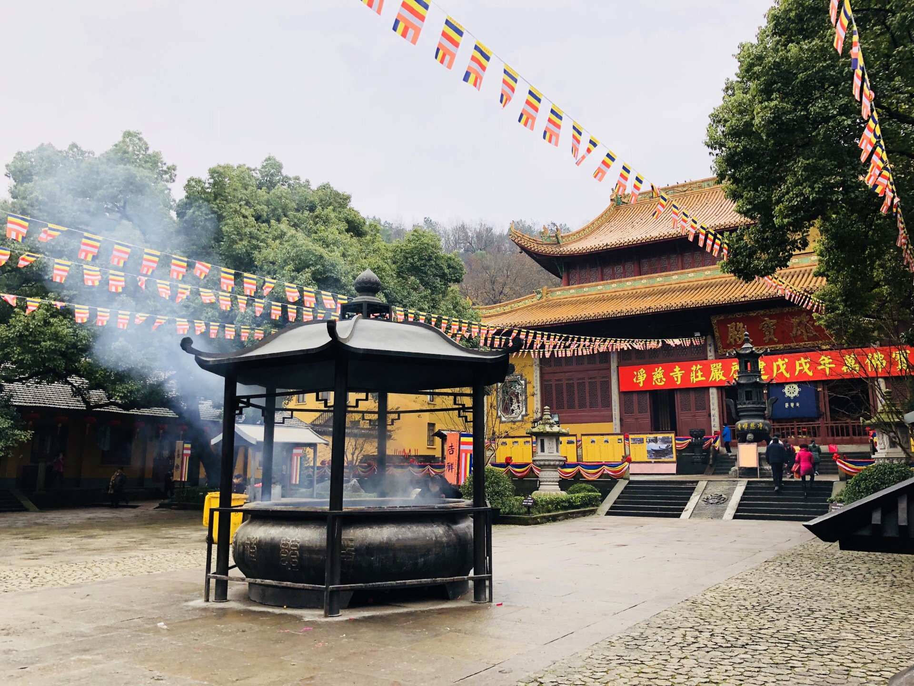
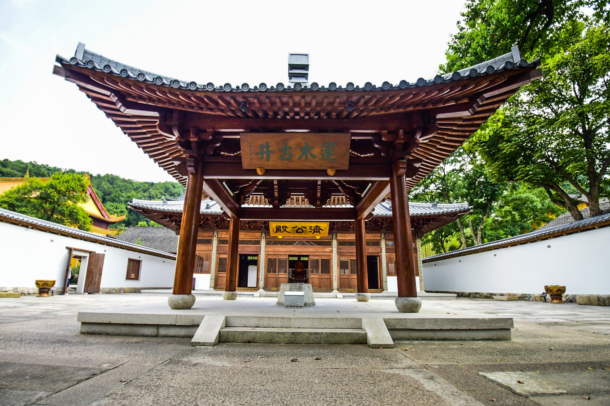
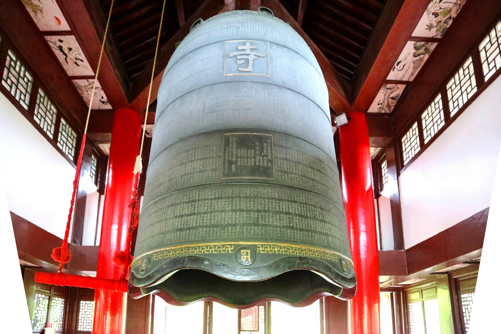

西湖十景之九的“南屏晚钟”即指南屏山净慈寺傍晚的钟声，南屏山在杭州西湖南岸、玉皇山北，九曜山东。主峰高百米，林木繁茂，石壁如屏， 北麓山脚下是净慈寺，傍晚钟声清越悠扬。
南屏晚钟，是西湖十景中问世最早的景目。北宋画家张择端曾经画过《南屏晚钟图》。尽管此图远不如他的《清明上河图》那么蜚声画坛，但却 被记载于明人《天水冰山录》中。
南屏山一带的山岭由石灰岩构成，山体多孔穴，加以山峰岩壁立若屏风，每当佛寺晚钟敲响，钟声振荡的频率传到山壁上，岩石、洞穴等为其所 迫，加速了声波的振动，振幅急剧增大后形成了共振效应。岩石、洞穴随之产生音响回波情况，增强了共鸣。同时，钟声还以相同的频率在西湖水 面上传播，直达对岸的宝石山，碰上由火成岩构成的葛岭、回波迭起在天地间交响混合，共振齐鸣，悠远清扬，经久不息，此时，在西湖水域的游 人就都能听到佛国的清音了。
南屏山北麓的净慈寺创建于五代后周显德元年（公元954年），距今已有1000多年历史。是吴越国王钱弘俶为供养南山佛教开山祖师永明禅师而建，原 名“慧日永明禅院”。地处怪石参嵯，宛若屏障的南屏山间。南宋时改名为“净慈禅寺”，与灵隐寺，昭庆寺，圣因寺并称“西湖四大丛林”。净慈寺初建时 就设钟楼一座。明代洪武十一年（公元1378年），嫌旧钟太小，重铸一口重达10吨的巨钟，因钟声洪亮，再加上寺后南屏山多空穴，所以晚钟敲响，钟 声更是穿穴回荡，传播山谷，远飘大半个杭城。清康熙南巡时，以天将破晓，“夜气方清，万籁俱寂，钟声乍起，响入云霄，致足发人深省也”之由，改 称“南屏晚钟”。
北宋以后，净慈寺与兴教寺一布置一衰，岁月既久，南屏晚钟的盛誉和胜况专属于净慈寺名下，净慈寺建起了绘饰华丽的钟楼，逐渐在为千年古刹 最为迷人的吸引物。净慈寺钟楼历经毁建，大钟也废而复铸，最具规模的篝铸，一次是在明洪截止十一年，信持夷简禅师募休聚铜二万余斤，铸成 巨钟一口，撞击声播远壑，余音缭绕。还有一次是在一九八六年，新铸铜钟高三米，口径二点三米，重喧十吨以上。钟体内外，镌铸《妙法莲华经》 七卷及铭文共计六万七千字；它采用“蒲牢雕龙”作钟钮，以八瓣莲花为钟唇，每瓣铸有一处撞钟点，其中六处钟点上铸有梵文。钟脊上立南无毗婆 尸佛和南无释迦牟尼佛等七个佛龛。
铜钟在连年战乱中悄然消失，钟声沉寂近百年。现在的钟是日本佛教界1984年捐资相助，重铸而成的悬挂在重建的二层三檐钟楼内。1984年12 月14日，日本曹洞宗大本山永平寺为报答祖庭恩德，捐赠3千万日元，由杭州制氧机厂铸造大梵钟一只，大小与明代时相同，作为中日友好的纪念。 铜钟高3.6米，直径2.3米，重1万余公斤，造型古朴，外面铸有大乘法莲华经共6.8万余字，每敲一下，余音2分钟之久。出净慈寺，前有一碑亭。 南屏晚钟碑亭在净慈寺前，为四石柱攒尖顶方亭。《西湖志》卷九：在南屏山净慈寺前，旧称南屏晓钟，康熙三十八年圣祖仁皇帝御题十景，改南 屏晚钟，建亭其处。《湖山便览》卷七：在寺门，面临万工池。宋陈清波、张择端，明戴进俱有南屏晚钟图，圣祖御书四字，为十景之一，恭摹勒 石建亭于此。今亭一九八六年建，有亭无碑。2002年立碑于亭中。
1986年在杭州绝响百年的“南屏晚钟”获新生。1986年11月21日上午10时许，108下雄浑壮阔、沉郁磅礴的钟声，回荡在杭州群山、碧湖上空，宣 告了绝响百年的“南屏晚钟”的新生。每到除夕之夜，杭州市各界人士和外宾、侨胞、游客聚集在净慈寺钟楼内外，举行新年撞钟除旧迎新活动。 当第一百零八声钟声响，正好是新春伊始之时。这一象征着祥和、欢乐、安定、团结的活动，为古老的南屏晚钟注入了新的涵义和魅力。
“南屏晚钟”是净慈寺的美称，成为著名的西湖十景之一。南屏晚钟与雷峰夕照隔路相对，塔影钟声组成了西湖十景中最迷人的晚景。
南屏山是九曜山的分支，此山山峰耸秀，怪石玲珑，棱壁横坡，宛若屏障。因地处杭城之南，有石壁如屏障，故名南屏山。南屏山，绵延横陈于西 湖南岸，山高不过百米，山体延伸却长达千余米。山上怪石耸秀，绿树惬眼。晴好日，满山岚翠在蓝天白云得衬托下秀色可餐，遇雨雾天，云烟遮 遮掩掩，山峦好像翩然起舞，飘渺空灵，若即若离。山巅主峰慧日峰海拔131米，由二叠系石灰岩构成。山体多峭壁、空穴，石景颇多，尤以北麓 “南屏晚钟”之景称胜西湖之上。山上有多处古代摩崖题刻和佛教古迹留存至今。林木以栎、松为主。旧时山麓多佛寺，名曰：佛国山。此处有史迹 十余处。
出净慈寺后门石板小道的东侧是如净禅师之塔。据说如净大师系日本曹洞宗派之师。至今每年还有日本曹洞宗派的弟子来此朝拜，这在日中友好活 动上有一定的意义。以此往西，但见林木茂密，此处景色灿烂鲜妍，无数石峰和洞壑隐于林下的草际，重重叠叠，观古藤满枝、荆棘遍地，使人感 到深不可测，真有深山野岙之感。
在南屏山净慈寺后，沿宽约50厘米的小道盘旋西行不远即见。莲花洞属地表石灰岩经长年溶蚀后形成之溶沟。
在南屏山莲花洞右侧，属石灰岩溶沟。《净慈寺志》卷十三：“两石相夹如龛，内镌石佛二像。其左壁胡中丞宗宪刻大楷书‘寰中天室’四大字，径 一尺二寸。”
法华台又名雨花台。由于它拔地数仞，巍然特立，故又名独秀峰。
位于莲花洞上方。“少林岩”相传系嵩山少林寺禅师云游至此面壁入定之处。上刻大楷书“少林”二字，径达三尺，今犹存，系宋楼钥书。
明朝时洞口原有“居然亭”，据史料记载居然亭在净慈寺后。《湖山便览》卷七：在莲花洞前，明嘉靖间，刑部照磨张文仁为绍兴守洪珠筑，取朱子 “一日茅栋成，居然我泉石”句为颜。
在南屏山慧日峰下，从莲花洞一直右行即是。《西湖志》卷五引《钱塘县志》：“两石离立相对，望若老翁邂逅状，其一巨首如戴笠，颔下镂小佛 像，眉睫剥落，崖上题名漶灭不可辨矣。”现可见三尊小石佛，头部已毁损，基座及头饰清晰。
从南屏俱乐部入口右行至山脊，可见一埋设水管的小道盘旋而上此处门若垂帘，亦名幽居洞，俗称仙人洞。《湖山便览》卷七：“相传葛仙翁修炼之 所。中可布两席，有摩崖艮卦及损卦辞，皆隶书，字径六寸，左有小石门，伛偻而上，可登琴台。今在小有天园。”凹洞下可见“南枝”、“壬申”、 “鸟啼”等字样。左有小石门，可慢慢而上，到达上面即是米沛所书的“琴台”。
在南屏山家人卦旁。摩崖正书“南山之隈，白石巍巍。上有丹崖，下有琴台。弥天然师，与我游哉。勒名石坚，庶播将来。至正甲午仲春，吴兴周 昌书于南屏石壁”。今日尚难寻到踪迹。
南屏往西，便是最著名的“右司马温公”的“家人卦”。摩崖题刻，司马光隶书，“家人卦”纵七尺四寸，横六尺，隶书十二行，行十七字，径五寸。 家人：“利女贞，彖曰：家人。女正位乎内，男正位乎外，男女正天地之大义也。家人有严君焉，父母之谓也。父父、子子、兄兄、弟弟、妇妇而 家道正，正家而天下定矣。象曰：风自火出。家人。君子以言有物，而行有恒。初九，闲有家。悔亡，象曰：闲有家，志未变也。六二，无攸遂， 在中馈。贞吉。”
净慈寺位于南屏山慧日峰下，面向西湖，为杭州著名丛林寺院。五代吴越忠懿王钱弘俶于后周显德元年（954年）创建。初建时，名慧日永明院，迎 衢州道潜禅师入寺，由他首先开坛说菩萨戒，署号为慈化定慧禅师，并由吴越王赐紫伽黎，成为净慈寺开山祖师。道潜禅师道行较高，各地僧众来寺参 学者，常在500人以上。后周显德二年，道潜向钱弘俶提出请求，将黄妃塔下地宫内的金铜罗汉十六尊移置净慈寺，钱弘俶也梦见十六尊者要求随道潜 入寺，以为灵验，故又加道潜师号应真，所建罗汉殿亦称应真殿。五代高僧贯休所画的十六罗汉图，后人称为“十六应真像”，今存杭州碑林。道潜于宋 建隆二年（961年）圆寂后，吴越王从灵隐寺请延寿禅师主慧日永明院，为净慈寺第一代住持。
道潜和延寿都研习修持法眼宗，该宗是佛教禅宗五家之一，创始人文益禅师（885－958年）出生杭州余杭，他吸收佛教禅、律各宗，融云门、曹洞 禅法自成“家风”，并著有《宗门十规论》。文益死后，南唐中主李璟追谥他为大法眼禅师，故后人称为“法眼宗”。延寿禅师住持净慈寺15年，有弟子 1700人，并在寺内建造东西两阁，广集各宗精通教义徒众，研讨佛学，著《宗镜录》百卷，全书80余万言，是佛教界有名的经典著作。由于《宗镜录》 是在永明院演法堂定稿，故将该堂改名为宗镜堂，延寿为法眼宗三世祖师，名扬海内外。
高丽国王闻讯后，特遣使臣送来礼品，派国僧36人前来求法。法眼宗教法传布国外。延寿于宋开宝三年（970年）奉吴越王钱弘俶之命在月轮山建造六 和塔镇潮。延寿是杭州佛教的杰出人物，他圆寂后，宋太祖加谥为“智觉禅师”，后人以寺名称其为“永明禅师”，称其塔为“永明祖塔”。宋太平兴国二 年（977年）净慈寺改称寿宁禅院，建炎二年（1128年）改为净慈禅寺，绍兴十九年（1149年）改为净慈报恩光孝禅寺。嘉泰四年（1204年）净慈寺 大火，除山门外，余均灰烬。
宋嘉定三年（1210年），曹洞宗第十三代祖如净受法，住持建康（今南京）清凉寺。后两度来杭住净慈寺。如净原在雪窦寺出家，从智鉴学法，为 杭州高僧真歇清了两传弟子，参学临济，得法于曹洞，成为一代宗匠。嘉定十六年（1223年）日本高僧永平道元（1200——1253年）两次入宋，得 如净授法，回国后传曹洞宗，奉如净为日本曹洞宗祖师。元至元二十七年（1290年）净慈寺焚毁后，经古田德后土、愚及至慧、方山文宝等禅师悉 心策划，先后修建了观音殿、大殿、罗汉殿、法堂等，并重建山门，恢复旧貌。
明洪武、正统两朝，净慈寺又遭火灾损失严重。先后由住持法净、宗妙募资修复。清康熙五年（1666年）将原建在大慈山下的永明祖塔迁建于净慈寺 东，门额为“极乐世界”。三十八年（1699年）康熙南巡时题“净慈禅寺”额。四十四年（1705年）山门及钟楼被焚。四十六年（1707年）修复，至四十 九年告竣，康熙制“重修净慈寺”碑文，立石于寺前，并建“御碑亭”。雍正八年（1730年）重修万工池、永明塔院等处。乾隆九年（1744年）寺宇重 修，十六年（1751年）乾隆游寺，题“正法眼藏”匾额。太平天国期间，寺被焚毁。清同治后，略有兴建并未复原。民国时期寺僧陆续募修，渐具规模， 大雄宝殿是民国21年（1932年）开工，25年（1936年）落成，翌年阴历四月初八（浴佛节）开光，殿高9丈6尺，长7楹，阔5楹。抗日战争，日寇侵 杭，殿宇摧残破损不堪。中华人民共和国成立后，该寺又经多次修缮。1955年曾全面整修，1959年又整修大殿并在殿西建济祖殿，天王殿前建有 “南屏钟声”碑亭。“文化大革命”时，该寺一度被占，有所损毁。后落实政策，发还寺产。1982年净慈寺划归市佛教协会管理后，第一期工程整修了后大 殿、客堂，第二期工程整修了金刚殿，南屏晚钟亭、御碑亭、运木古井及照壁，1985年竣工。
关于运木古井的神话传说：
自从净慈寺被火烧光，寺里两三百个和尚没处落脚，一个个像无头苍蝇，乱碰乱撞；当家老方丈更伤心，急得成天长吁短叹，捶胸顿足；只有济颠， 却像没事人似的，仍旧拖着破蒲鞋，摇着扇儿，跑前跑后，嘻嘻哈哈。这天，当家老方丈对济颠说：“济颠，寺院烧成这个样子，你一点也不难过么？” 济颠说：“烧都烧光了，难过有啥用场？再盖座新的好啦。”老方丈说：“唉，盖座寺院谈何容易，要多少木头！一时到什么地方去募化呀？”济颠听了， 哈哈大笑，说道：“师父，这你不用愁了，一切都包在我身上。”
老方丈听了，心里想：莫看济颠平时疯疯癫癫，到紧要关头，他却聪慧过人。前番怪我没有弄懂他的意思，烧了净慈寺。这次说不定他能募化到这 许多木头哩。于是点点头，说道：“济颠，建这大寺的木头，你就去化个善缘吧！”济颠听了，笑道：“这我一定从命，只是我饿了！师父请请我才对呀。 ”老方丈叹口气道：“只要你能化到木头，吃什么我都替你办到。”济颠听了，赶忙说：“说了算数。你就给我一坛老酒，两只狗腿好了。”
当下，老方丈差人买来一坛老酒，两只狗腿送给济颠。济颠笑得眼睛眯成一丝缝，一手捧酒，一手拿肉，大喝大嚼了起来。等到狗肉吃光，酒坛底朝 天，已是醉醺醺的了，就对老方丈说：“师父，我去化木头啦，三天内，我把木头都化来，你等着吧。我去啦！”说完，便一个斤斗翻进酒坛里--不见 了。济颠这一斤斗，一下就翻到四川。他来到一家大乡绅门口，一股劲地敲木鱼儿。那乡绅听见门外木鱼响个不停，就出来问道：“和尚，你从哪里来的 呀？”济颠回答说：“我从杭州西湖净慈寺来的。”那乡绅听了点点头道：“好远的路呀。你到我门口来敲木鱼做啥？”济颠说：“因为我们寺院被天火烧 了，知道你是个大财主，山上有的是森林大木，特地赶来向你募化一些木头去盖寺院。”那乡绅问道：“你要多少木头呢？”济颠听了，敲着木鱼念道： “少不成，多不要，不多也不少，喏喏喏，袈裟盖，袈裟包，盖住包住就够了，就够了！”那乡绅一看济颠那件破得像丝瓜筋一般的袈裟，心里不禁暗暗 好笑：哦，原来是个疯和尚呀！这件袈裟连枝树桠儿也包不了，我乐得做个善人吧。便满口应承下来。济颠道声谢，忙从身上脱下袈裟，朝一座山头抛 去。只见那袈裟随风长，随风大，一下子把整个山头都罩住了。那乡绅惊得目瞪口呆，做梦也没想到这疯和尚竟有这样大的法力呀！不过自己已经有话 在前，不好翻悔了。
济颠在山上挑选了一百株大树，砍了下来，顺着长江水放到东海，再漂进钱塘江。江上把关卡的见了，拦住木筏要抽税。济颠说：“这钱塘江又不是 你家的，凭什么要抽我税？”把关卡的就说：“和尚呀，山是皇上的山，水是皇上的水，随便什么货物经过水面上都规定要抽税。”济颠听了，笑嘻嘻地 问：“哦，原来如此！从水面上过要抽税，那么从水底下过要不要抽税呢？”把关卡的听到这疯话也乐了，就哈哈大笑道：“和尚，木头只会浮不能沉， 你若有本事叫木头沉到水底去，我就不抽你的税！”话音才落，只见济颠双脚在木筏上用力一顿，“忽”的一下子，就连人带木筏一齐沉到江底去啦。把 那个把关卡的吓得连滚带爬，喊爷叫娘地逃走了。
净慈寺里的和尚，等了一天不见济颠回来，再等一天还不见济颠回来，一直等到第三天晌午，当家老方丈有点发急啦。猛不防济颠从外面奔了进来， 大叫大嚷道：“木头到啦！木头到啦！”老方丈慌忙出来，朝南屏大路上看看，什么也没有，还愣着哩！只见济颠一把拉住他的手，大声叫道“师父师父， 快跟我来！快跟我来！”他们三脚两步奔到伙房前面那口“醒心井”的旁边。老方丈朝井内一看，嗨！果然有根又粗又大的木头，在水面上一冒一冒的， 高兴极啦，忙叫一些和尚在井上搭架子，安上辘轳吊木头。
这一来，轰动了所有和尚，大家一齐动手，没一刻，搭好吊木架子。他们吊呀，吊呀，吊起一根又一根，吊起一根又一根，整整吊了两天，一直吊到 第九十九根大木头时，不知是哪一个木匠说了声：“够啦！”被他这么一说，井里的那根木头就搁住啦，再也吊不动。这么一来，在造净慈寺时，大家量 来算去，就少这么一根正梁。后来净慈寺的正梁，是济颠用刨花和木屑捏成的，有点儿凹凹凸凸，跟别的寺院正梁很不相同。
“醒心井”因为曾经是运过木头，后来人们便叫它为“运木古井”。那根吊不上来的木头，许多年来，还搁在井里面哩。
那日，济公回到净慈寺，颇有倦意，长老感激济公为寺做了那么多好事，于是便做了一席上等酒席请济公吃。而济公却一反常态，只拿起一碗酒一 饮而尽，就停下了，长老觉得奇怪，便问：“道济，为何今天只喝一碗酒？“济公回答道：“一生一百一，亦是一个一，一僧六十一，一碗了一一。” 长老听不明白，正想问，济公却说：“师傅，你听……”话音刚落，突然传来当当当几声钟响，长老奇怪，怎么这个时候撞钟的呢，便走到窗前一看，只见 夕阳西下，晚霞映天，远处钟声阵阵，声声苍凉。长老心头一愣，回过头来一看，只见此时济公端坐在禅床上，双手合十，双眼半开半闭，似睡非睡， 似醉非醉，面露笑容，长老连叫了几声，济公都没再回应。这一位可以点石成金而自己却身无分文的穷和尚，这一位神通广大心地慈祥又嫉恶如仇的罗 汉，已经离开凡间，回去见佛祖了。长老为了纪念济公，便规定以后每日黄昏时分，也就是济公圆寂之时，敲响净慈寺的大钟，表示敬意。从此，使得 净慈寺又多了一处名胜，称为“南屏晚钟”。
“净慈寺，周显德元年钱王俶建，号慧日永明院，迎衢州道潜禅师居之。潜尝欲向王求金铸十八阿罗汉，未白也。王忽夜梦十八巨人随行。翌日，道 潜以请，王异而许之，始作罗汉堂。宋建隆初，禅师延寿以佛祖大意，经纶正宗，撰《宗镜录》一百卷，遂作宗镜堂。熙宁中，郡守陈襄延僧宗本居 之。岁旱，湖水尽涸。寺西隅甘泉出，有金色鳗鱼游焉，因凿井，寺僧千余人饮之不竭，名曰圆照井。南渡时，毁而复建，僧道容鸠工五岁始成。塑五 百阿罗汉，以田字殿贮之。
绍兴九年，改赐净慈报恩光化寺额。复毁。孝宗时，一僧募缘修殿，日餍酒肉而返，寺僧问其所募钱几何，曰：“尽饱腹中矣。”募化三年，簿上布 施金钱，一一开载明白。一日，大喊街头曰：“吾造殿矣。”复置酒肴，大醉市中，揠喉大呕，撒地皆成黄金，众自是毕集，而寺遂落成。僧名济颠。识 者曰：“是即永明后身也。”嘉泰间，复毁，再建于嘉定三年。寺故闳大，甲于湖山。翰林程珌记之，有“湿红映地，飞翠侵霄，檐转鸾翎，阶排雁齿。 星垂珠网，宝殿洞乎琉璃；日耀璇题，金椽耸乎玳瑁”之语。时宰官建议，以京辅佛寺推次甲乙，尊表五山，为诸刹纲领，而净慈与焉。先是，寺僧艰 汲，担水湖滨。绍定四年，僧法薰以锡杖扣殿前地，出泉二派，鍫为双井，水得无缺。
淳祐十年，建千佛阁，理宗书“华严法界正偏知阁”八字赐之。元季，湖寺尽毁，而兹寺独存。明洪武间毁，僧法净重建。正统间复毁，僧宗妙复建。 万历二十年，司礼监孙隆重修，铸铁鼎，葺钟楼，构井亭，架掉楔。永乐间，建文帝隐遁于此，寺中有其遗像，状貌魁伟，迥异常人。”
后周显得元年（954），吴越国主钱弘叔在南屏山麓建佛寺慧日永明院，后来成为与灵隐寺并峙于南北的西湖两大佛教道场之一的净慈寺。南屏山横 亘于西湖南岸，山上林木苍翠，秀石玲珑。山上有一净慈寺，位于西湖南岸南屏山慧日峰下，吴越始建，称“永明禅院”，饱经沧桑。寺内有宗镜堂、慧 日阁、济祖殿、运木井等古迹，山门前有放生池。寺院原有铜钟一口，每天傍晚，深沉、浑厚的钟声在苍烟暮霭中回响，山回谷鸣，发人悠远的沉思， “南屏晚钟”因此得名。南屏山麓另一座著名的佛刹兴教寺始建于北宋开宝五年，它曾是佛教天台宗山家派的大本营，晨钟暮鼓，香烟烛光，南屏山从此 添了“佛国山”的别称。
南屏山麓另一座著名的佛刹，兴教寺始建于北宋开宝五年（972），它曾是佛教天台宗山家派的大本营。净慈寺、兴教寺加上附近的中小寺庙，形成 继灵隐、天竺之后湖上又一佛寺群落，晨钟暮鼓，焚贝佛号，香烟烛光，南屏山从此添了‘佛国山’的别称南屏晚钟的情韵，悠然成型。